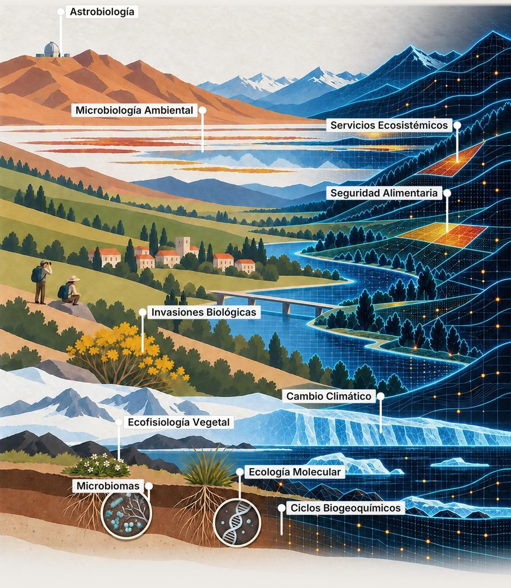

Centro de Ecología Integrativa
El centro de investigación de la Universidad de Talca donde se desarrolla el proyecto Pirobioma.
Conectamos escalas modelando procesos ecológicos.
El Centro de Ecología Integrativa (CEI) de la Universidad de Talca reúne a investigadores, estudiantes y profesionales que estudian cómo funcionan los ecosistemas, desde los microorganismos del suelo y las moléculas hasta el paisaje y el clima.
Su trabajo combina terreno, laboratorio y modelación para entender procesos que ocurren a escalas muy distintas, y conectarlos entre sí.
- Microbiomas
- Microbiología ambiental
- Ecología molecular
- Ciclos biogeoquímicos
- Ecofisiología vegetal
- Invasiones biológicas
- Cambio climático
- Servicios ecosistémicos
- Seguridad alimentaria
- Astrobiología
El proyecto Pirobioma se cruza con varias de estas líneas: los microbiomas del suelo, las invasiones biológicas y la ecología de las plantas después del fuego.

Líneas de investigación
- 01
Ecología microbiana
Microorganismos e interacciones
- 02
Ecología y evolución vegetal
Plantas, adaptación y agroecosistemas
- 03
Astroecología
Vida en ambientes extremos
- 04
Socioecología
Modelamiento del paisaje